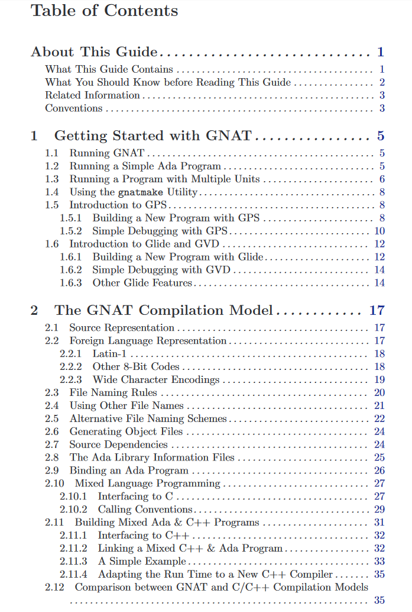
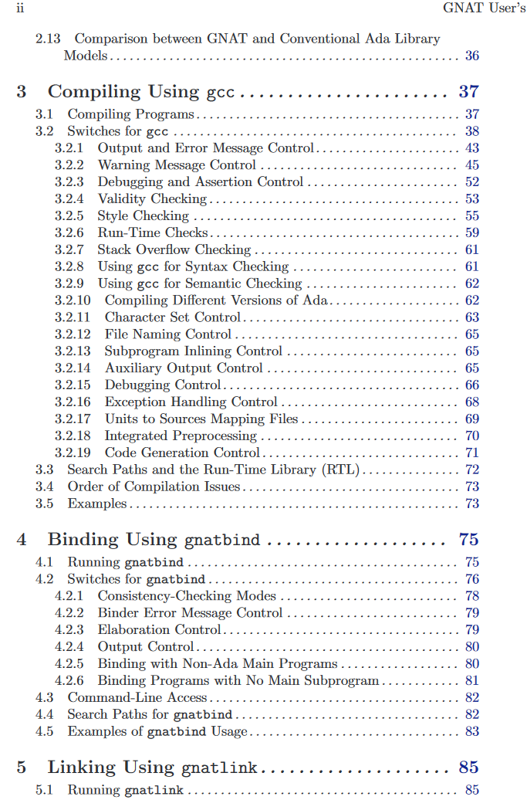
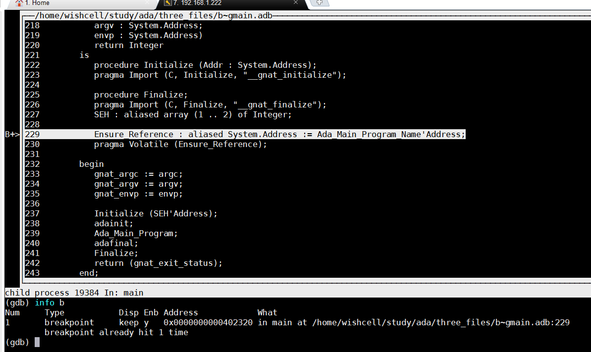

gnat 用户手册一、第一章 gnat 走起1、 gnat 使用三步曲2、一步到位编译得到可执行文件3、编译运行多个源文件的小项目A、基础的编译、运行方法B、多个文件时， gnatmak 编译也会自动推导。4、ADA IDE GPS(GNAT Programming System) 介绍5、ADA IDE 开发环境 glide / gvd 介绍6、ADA 的 GDB 调试二、第二章 gnat 编译模式1、好复杂的文件名称规则，没看懂2、 ada 与 C 的混合编程，主程序为 adaA、源码如下B、编译、运行流程3、ada 与 C 的混合编程，主程序为CA、源码如下B、编译、运行步骤如下4、ada 与 C++ 的混合编程A、源码如下，此例涉及类结构的传递B、编译、执行三、第三章 使用 gcc 编译1、-c2、gcc选项作用于所有文件，除非 -gnatx仅作用于 ada文件3、列出全部选项，一一描述四、 GNAT 项目管理器
本文讲述 ada 编译器、软件开发工具 GNAT 的用法、针对版本 ada 95。讲述 gnat 的特征以及开发的细节其它网站： http://www.gnavi.org/launch.php?URL=http%3A%2F%2Fwww.adaic.org%2Fstandards%2F95lrm%2Fhtml%2FRM-TTL.html http://adapower.com/index.php?Command=Index&Title=Home


gnat 走起源码如下：
xxxxxxxxxx源文件 hello.adb 如下，故意将代码不对齐，可正常编译运行with Ada.Text_IO;use Ada.Text_IO;procedureHello isbegin Put_Line ("Hello, world!");end Hello;整理对齐后是这样的：with Ada.Text_IO; use Ada.Text_IO;procedure Hello isbeginPut_Line ("Hello WORLD!");end Hello;x编译：# gcc -c hello.adb绑定：$ gnatbind hello链接：$ gnatlink hello
xxxxxxxxxx$ gnatmake hello.adb$ ./helloHello WORLD!
x
项目如果有三个文件：[wishcell@localhost three_files]$ lsgmain.adb greetings.adb greetings.ads[wishcell@localhost three_files]$ cat gmain.adbwith Greetings;procedure Gmain isbegin Greetings.Hello; Greetings.Goodbye;end Gmain;[wishcell@localhost three_files]$ cat greetings.adspackage Greetings is procedure Hello; procedure Goodbye;end Greetings;[wishcell@localhost three_files]$ cat greetings.adbwith Ada.Text_IO; use Ada.Text_IO;package body Greetings is procedure Hello is begin Put_Line ("Hello WORLD!"); end Hello; procedure Goodbye is begin Put_Line ("Goodbye WORLD!"); end Goodbye;end Greetings;--body of packag of Greetings[wishcell@localhost three_files]$编译方法：
[wishcell@localhost three_files]$ gcc -c gmain.adb[wishcell@localhost three_files]$ lsgmain.adb gmain.ali gmain.o greetings.adb greetings.ads[wishcell@localhost three_files]$ gcc -c greetings.adb[wishcell@localhost three_files]$ lsgmain.adb gmain.ali gmain.o greetings.adb greetings.ads greetings.ali greetings.o[wishcell@localhost three_files]$ gnatbind gmain[wishcell@localhost three_files]$ gnatlink gmain[wishcell@localhost three_files]$ lsgmain gmain.adb gmain.ali gmain.o greetings.adb greetings.ads greetings.ali greetings.o[wishcell@localhost three_files]$ ./gmainHello WORLD!Goodbye WORLD![wishcell@localhost three_files]$更加简洁的编译方法，一步到位：
xxxxxxxxxx[wishcell@localhost three_files]$ lsgmain.adb greetings.adb greetings.ads[wishcell@localhost three_files]$ gnatmake gmain.adbgcc -c gmain.adbgcc -c greetings.adbgnatbind -x gmain.alignatlink gmain.ali[wishcell@localhost three_files]$ lsgmain gmain.adb gmain.ali gmain.o greetings.adb greetings.ads greetings.ali greetings.o[wishcell@localhost three_files]$ ./gmainHello WORLD!Goodbye WORLD![wishcell@localhost three_files]$语法检查，而不进行代码生成：
x
[wishcell@localhost three_files]$ lsgmain.adb greetings.adb greetings.ads[wishcell@localhost three_files]$ gcc -c greetings.adb -gnatc[wishcell@localhost three_files]$ lsgmain.adb greetings.adb greetings.ads greetings.ali[wishcell@localhost three_files]$
x
如，之前已经编译成功，得到可执行文件。此时在 greetings.adb 中加入一条打印语句：[wishcell@localhost three_files]$ gnatmake gmain.adbgcc -c greetings.adbgnatbind -x gmain.alignatlink gmain.ali[wishcell@localhost three_files]$ lsgmain gmain.adb gmain.ali gmain.o greetings.adb greetings.ads greetings.ali greetings.o[wishcell@localhost three_files]$ ./gmainHello WORLD!Hello WORLD,Mr Zhou!Goodbye WORLD![wishcell@localhost three_files]$
x
因工具软件太大，一时无法下载，暂且跳过 xxxxxxxxxx不甚明白，未弄清楚 x
A、编译时和链接时，必须加上 -g 选项[wishcell@localhost three_files]$ lsgmain.adb greetings.adb greetings.ads[wishcell@localhost three_files]$ gcc -c -g gmain.adb[wishcell@localhost three_files]$ gcc -c -g greetings.adb[wishcell@localhost three_files]$ gnatbind gmain[wishcell@localhost three_files]$ gnatlink -g gmain[wishcell@localhost three_files]$ ./gmainHello WORLD!Hello WORLD,Mr Zhou!Goodbye WORLD!B、开始 gdb 调试，与 C 语言 GDB 方法如出一辙：[wishcell@localhost three_files]$ gdb ./gmainGNU gdb (GDB) Red Hat Enterprise Linux 7.6.1-100.el7Copyright (C) 2013 Free Software Foundation, Inc.License GPLv3+: GNU GPL version 3 or later <http://gnu.org/licenses/gpl.html>This is free software: you are free to change and redistribute it.There is NO WARRANTY, to the extent permitted by law. Type "show copying"and "show warranty" for details.This GDB was configured as "x86_64-redhat-linux-gnu".For bug reporting instructions, please see:<http://www.gnu.org/software/gdb/bugs/>...Reading symbols from /home/wishcell/study/ada/three_files/gmain...done.(gdb) b mainBreakpoint 1 at 0x402320: file /home/wishcell/study/ada/three_files/b~gmain.adb, line 229.(gdb) rStarting program: /home/wishcell/study/ada/three_files/./gmainBreakpoint 1, main (argc=1, argv=(system.address) 0x7fffffffe488, envp=(system.address) 0x7fffffffe498) at /home/wishcell/study/ada/three_files/b~gmain.adb:229229 Ensure_Reference : aliased System.Address := Ada_Main_Program_Name'Address;Missing separate debuginfos, use: debuginfo-install glibc-2.17-196.el7.x86_64 libgcc-4.8.5-16.el7_4.2.x86_64 libgnat-4.8.5-16.el7_4.2.x86_64(gdb)layout src
xxxxxxxxxx同样可以在某一行下断点，进行单步跟踪。
x
共有三个文件：[wishcell@localhost mix_ada_c]$ lsfile1.c file2.c my_main.adb[wishcell@localhost mix_ada_c]$ cat file1.c#include <stdio.h>void print_num (int num){ printf ("num is %d.\n", num); return;}[wishcell@localhost mix_ada_c]$ cat file2.cextern int num_from_Ada;int get_num (void){ return num_from_Ada;}[wishcell@localhost mix_ada_c]$ cat my_main.adb-- my_main.adbprocedure My_Main is -- Declare then export an Integer entity called num_from_Ada My_Num : Integer := 10; pragma Export (C, My_Num, "num_from_Ada"); -- Declare an Ada function spec for Get_Num, then use -- C function get_num for the implementation. function Get_Num return Integer; pragma Import (C, Get_Num, "get_num"); -- Declare an Ada procedure spec for Print_Num, then use -- C function print_num for the implementation. procedure Print_Num (Num : Integer); pragma Import (C, Print_Num, "print_num");begin Print_Num (Get_Num);end My_Main;
x
[wishcell@localhost mix_ada_c]$ lsfile1.c file2.c my_main.adb[wishcell@localhost mix_ada_c]$ gcc -c file1.c[wishcell@localhost mix_ada_c]$ lsfile1.c file1.o file2.c my_main.adb[wishcell@localhost mix_ada_c]$ gcc -c file2.c[wishcell@localhost mix_ada_c]$ lsfile1.c file1.o file2.c file2.o my_main.adb[wishcell@localhost mix_ada_c]$ gnatmake -c my_main.adbgcc -c my_main.adbmy_main.adb:5:21: warning: "My_Num" has been made static as a result of Exportmy_main.adb:5:21: warning: this usage is non-standard and non-portable[wishcell@localhost mix_ada_c]$ lsfile1.c file1.o file2.c file2.o my_main.adb my_main.ali my_main.o[wishcell@localhost mix_ada_c]$ gnatbind my_main.ali[wishcell@localhost mix_ada_c]$ lsb~my_main.adb file1.c file2.c my_main.adb my_main.ob~my_main.ads file1.o file2.o my_main.ali[wishcell@localhost mix_ada_c]$ gnatlink my_main.ali file1.o file2.o[wishcell@localhost mix_ada_c]$ lsfile1.c file2.c my_main my_main.alifile1.o file2.o my_main.adb my_main.o[wishcell@localhost mix_ada_c]$ ./my_mainnum is 10.[wishcell@localhost mix_ada_c]$所有这些编译、链接操作加上参数 -g 之后，即可以用 gdb 跟踪代码最后三步可以合为一条语句完成：[wishcell@localhost mix_ada_c]$ gnatmake my_main.adb -largs file1.o file2.o
xxxxxxxxxx与入口为 ada 的程序相比，主要就是要在调用 ada 之前进行初始化 ada，最后结束 ada xxxxxxxxxx共有5个文件，一个C文件，包含 main 函数入口：[wishcell@localhost mix_ada_c_CMain]$ lsunit1.ads unit2.ads main.c unit1.adb unit2.adb 主函数内容如下：[wishcell@localhost mix_ada_c_CMain]$ cat main.c/* main.c */extern void adainit (void);extern void adafinal (void);extern int add (int, int);extern int sub (int, int);int main (int argc, char *argv[]){ int a = 21, b = 7; adainit(); /* Should print "21 + 7 = 28" */ printf ("%d + %d = %d\n", a, b, add (a, b)); /* Should print "21 - 7 = 14" */ printf ("%d - %d = %d\n", a, b, sub (a, b)); adafinal();}[wishcell@localhost mix_ada_c_CMain]$ cat unit1.adspackage Unit1 is function Add (A, B : Integer) return Integer; pragma Export (C, Add, "add");end Unit1;[wishcell@localhost mix_ada_c_CMain]$ cat unit1.adbpackage body Unit1 is function Add (A, B : Integer) return Integer is begin return A + B; end Add;end Unit1;[wishcell@localhost mix_ada_c_CMain]$ cat unit2.adspackage Unit2 is function Sub (A, B : Integer) return Integer; pragma Export (C, Sub, "sub");end Unit2;[wishcell@localhost mix_ada_c_CMain]$ cat unit2.adbpackage body Unit2 is function Sub (A, B : Integer) return Integer is begin return A - B; end Sub;end Unit2;[wishcell@localhost mix_ada_c_CMain]$ xxxxxxxxxx[wishcell@localhost mix_ada_c_CMain]$ lsmain.c unit1.adb unit1.ads unit2.adb unit2.ads[wishcell@localhost mix_ada_c_CMain]$ gcc -c -g main.cmain.c: In function ‘main’:main.c:11:5: warning: incompatible implicit declaration of built-in function ‘printf’ [enabled by default] printf ("%d + %d = %d\n", a, b, add (a, b)); ^[wishcell@localhost mix_ada_c_CMain]$ lsmain.c main.o unit1.adb unit1.ads unit2.adb unit2.ads[wishcell@localhost mix_ada_c_CMain]$ gnatmake -c -g unit1.adbgcc -c -g unit1.adbunit1.adb:6:09: missing "end Unit1;"gnatmake: "unit1.adb" compilation error[wishcell@localhost mix_ada_c_CMain]$ vim unit1.adb[wishcell@localhost mix_ada_c_CMain]$ gnatmake -c -g unit1.adbgcc -c -g unit1.adb[wishcell@localhost mix_ada_c_CMain]$ lsmain.c main.o unit1.adb unit1.ads unit1.ali unit1.o unit2.adb unit2.ads[wishcell@localhost mix_ada_c_CMain]$ gnatmake -c -g unit2.adbgcc -c -g unit2.adbgnatbind 参数 -n 的作用是告诉 ada，主函数入口不在 ada 程序中 [wishcell@localhost mix_ada_c_CMain]$ gnatbind -n unit1.ali unit2.ali链接生成目标文件，注意，两个 .ali 到了这里只用了一个，因为它们被绑定了一个：[wishcell@localhost mix_ada_c_CMain]$ gnatlink unit2.ali main.o -o exec_file[wishcell@localhost mix_ada_c_CMain]$ lsexec_file main.o unit1.ads unit1.o unit2.ads unit2.omain.c unit1.adb unit1.ali unit2.adb unit2.ali[wishcell@localhost mix_ada_c_CMain]$ ./exec_file21 + 7 = 2821 - 7 = 14
xxxxxxxxxxada 与 c++ 混合编程，主要手段有二：1、采用 extern "c" ，把 c++ 代码转化为C代码2、指明 c++ 的中间文件名混合编程用到的工具：CPP_Class 、 CPP_VirtualC++ 编译器： g++ (gnu c++ compiler)c++ 链接器： c++ x
共有5个文件，入口为 cpp 实现：[wishcell@localhost mix_ada_cpp_CppMain]$ lltotal 20-rw-rw-r--. 1 wishcell wishcell 217 Feb 27 00:41 cpp_main.c-rw-rw-r--. 1 wishcell wishcell 358 Feb 27 00:41 example.c-rw-rw-r--. 1 wishcell wishcell 139 Feb 27 00:19 example.h-rw-rw-r--. 1 wishcell wishcell 208 Feb 27 00:16 simple_cpp_interface.adb-rw-rw-r--. 1 wishcell wishcell 382 Feb 27 00:16 simple_cpp_interface.ads[wishcell@localhost mix_ada_cpp_CppMain]$ cat cpp_main.c#include "example.h"extern "C" { void adainit (void); void adafinal (void); void method1 (A *t);}void method1 (A *t){ t->method1 ();}int main (){ A obj; adainit (); obj.method2 (3030); adafinal (); return 0;}[wishcell@localhost mix_ada_cpp_CppMain]$[root@localhost mix_ada_cpp_CppMain]# cat example.hclass Origin { public: int o_value;};class A : public Origin { public: void method1 (void); void method2 (int v); A(); int a_value;};[root@localhost mix_ada_cpp_CppMain]# cat example.c#include "example.h"#include <stdio.h>extern "C" { void ada_method2 (A *t, int v);}void A::method1 (void){ a_value = 2020; printf ("in A::method1, a_value = %d \n",a_value);}void A::method2 (int v){ ada_method2 (this, v); printf ("in A::method2, a_value = %d \n",a_value);}A::A(void){ a_value = 1010; printf ("in A::A, a_value = %d \n",a_value);}[root@localhost mix_ada_cpp_CppMain]#[root@localhost mix_ada_cpp_CppMain]# cat simple_cpp_interface.adspackage Simple_Cpp_Interface is type A is limited record O_Value : Integer; A_Value : Integer; end record; pragma Convention (C, A); procedure Method1 (This :in out A); pragma Import (C, Method1); procedure Ada_Method2 (This :in out A; V : Integer); pragma Export (C, Ada_Method2);end Simple_Cpp_Interface;[root@localhost mix_ada_cpp_CppMain]# cat simple_cpp_interface.adbpackage body Simple_Cpp_Interface is procedure Ada_Method2 (This : in out A; V : Integer) is begin Method1 (This); This.A_Value := V; end Ada_Method2;end Simple_Cpp_Interface;[root@localhost mix_ada_cpp_CppMain]#
x
[root@localhost mix_ada_cpp_CppMain]# gnatmake -c simple_cpp_interface[root@localhost mix_ada_cpp_CppMain]# c++ -c cpp_main.c[root@localhost mix_ada_cpp_CppMain]# c++ -c example.c[root@localhost mix_ada_cpp_CppMain]# gnatbind -n simple_cpp_interface[root@localhost mix_ada_cpp_CppMain]# gnatlink simple_cpp_interface -o cpp_main --LINK=g++ -lstdc++ example.o cpp_main.o[root@localhost mix_ada_cpp_CppMain]# ./cpp_mainin A::A, a_value = 1010in A::method1, a_value = 2020in A::method2, a_value = 3030[root@localhost mix_ada_cpp_CppMain]#详细执行流程打印：虽然 simple_cpp_interface.adb 中说 Simple_Cpp_Interface，但是文件名必须全小写，否则报错：[root@localhost mix_ada_cpp_CppMain]# lscpp_main.c example.c example.h simple_cpp_interface.adb simple_cpp_interface.ads[root@localhost mix_ada_cpp_CppMain]# gnatmake -c simple_cpp_interfacegcc -c simple_cpp_interface.adb[root@localhost mix_ada_cpp_CppMain]# c++ -c cpp_main.c[root@localhost mix_ada_cpp_CppMain]# c++ -c example.example.c example.h[root@localhost mix_ada_cpp_CppMain]# c++ -c example.c[root@localhost mix_ada_cpp_CppMain]# gnatbind -n simple_cpp_interface[root@localhost mix_ada_cpp_CppMain]# gnatlink simple_cpp_interface -o cpp_main --LINK=g++ -lstdc++ example.o cpp_main.o[root@localhost mix_ada_cpp_CppMain]# lscpp_main cpp_main.o example.h simple_cpp_interface.adb simple_cpp_interface.alicpp_main.c example.c example.o simple_cpp_interface.ads simple_cpp_interface.o[root@localhost mix_ada_cpp_CppMain]# ./cpp_mainin A::A, a_value = 1010in A::method1, a_value = 2020in A::method2, a_value = 3030[root@localhost mix_ada_cpp_CppMain]#
xxxxxxxxxx本章介绍怎样使用 gcc 编译 ada，同时介绍控制编译器行为的选项-c通知编译器编译，但是不
link
xxxxxxxxxxgcc 实际上只是一个驱动程序，根据文件后缀名选择合适的编译器如 GNU C 的编译器是 cc1，而 ada 编译器是 gnat1。这些程序都在内部目录中，当然 gcc 知道在哪里。一条命令行编译多种类型的源文件：
xxxxxxxxxx[wishcell@localhost mix_ada_c_CMain]$ lsmain.c unit1.adb unit1.ads unit2.adb unit2.ads一条语句编译两个 .adb 文件和一个 .c 文件：[wishcell@localhost mix_ada_c_CMain]$ gcc -c unit1.adb unit2.adb main.cmain.c: In function ‘main’:main.c:11:5: warning: incompatible implicit declaration of built-in function ‘printf’ [enabled by default]printf ("%d + %d = %d\n", a, b, add (a, b));^可以看到，已经生成了相应的中间文件：[wishcell@localhost mix_ada_c_CMain]$ lsmain.c main.o unit1.adb unit1.ads unit1.ali unit1.o unit2.adb unit2.ads unit2.ali unit2.o将多个 .ali 文件绑定为一个。 -n 的作用说明 main 函数不在 ada 中：[wishcell@localhost mix_ada_c_CMain]$ gnatbind -n unit1 unit2链接，同时输入多个 .ali 文件时报错，因为 unit1.ali 和 unit2.ali 已经合并成立一个,unit2.ali：[wishcell@localhost mix_ada_c_CMain]$ gnatlink unit1.ali unit2.ali main.o -o maingnatlink: cannot handle more than one ALI file[wishcell@localhost mix_ada_c_CMain]$ lsb~unit2.adb main.c unit1.adb unit1.ali unit2.adb unit2.alib~unit2.ads main.o unit1.ads unit1.o unit2.ads unit2.o尝试链接第一个 unit1.ali，发现根本不认：[wishcell@localhost mix_ada_c_CMain]$ gnatlink unit1.ali main.o -o maingnatlink: Failed to open binder output再次采用 unit2.ali 进行链接，终于成功：[wishcell@localhost mix_ada_c_CMain]$ gnatlink unit2.ali main.o -o main[wishcell@localhost mix_ada_c_CMain]$ lsmain main.c main.o unit1.adb unit1.ads unit1.ali unit1.o unit2.adb unit2.ads unit2.ali unit2.o[wishcell@localhost mix_ada_c_CMain]$ ./main21 + 7 = 2821 - 7 = 14[wishcell@localhost mix_ada_c_CMain]$
gcc选项作用于所有文件，除非 -gnatx仅作用于 ada文件x-b target 跨平台，填写目标平台-Bdir 指定编译器版本路径，而不从默认路径。多个版本编译器情况下有用-c 指定编译-fno-inline 忽略代码中的 inline 关键字-fno-strict-aliasing 允许指针指向同一块内存地址-fstack-check 的准确性较差，特别是在代码执行了 O2 以上的优化后-fbounds-check 可以执行数组边界错误，主要是检查对数组赋值越界-fstack-protector-all 可以防止缓冲区溢出攻击，也可以利用此选项来检查代码是否有缓冲区溢出的错误-fstack-usage 编译器打印出程序中每个函数栈的使用情况。 gcc 文档中有详细说明-g 生成高度信息-gnat83 强制 ada83 限制-gnat95 强制 ada95 限制-gnat05 支持 ada 2005 全部特性-gnata 支持断言............还是看英文手册
xxxxxxxxxx-gnatv 等一系列选项，可用于控制编译错误的输出打印格式xxxxxxxxxx-gnatwx 等一系列选项，可控制编译告警输出格式化xxxxxxxxxx-gnatVa 等一系列选项，可用于配置合法检查参数xxxxxxxxxx代码格式选项，可检查代码的编写风格xxxxxxxxxxgcc -c -fstack-check main.c 栈检测
xxxxxxxxxx这是一套项目管理工具，其功能如下；1、指定一个或多个包含项目代码的目录2、指定编译目标文件(*.ali, *.o, ...，可执行文件) 的输出路径3、切换各种工具选项(gnatmake / compiler / binder / linker / gnatls / gnatls / gnatxref / gnatfind)，可以设置全局选项或者单独应用4、指定编译包含入口 main 函数的程序5、指定当前编程语言6、指定文件命名约定。可以全局指定或者单独应用。